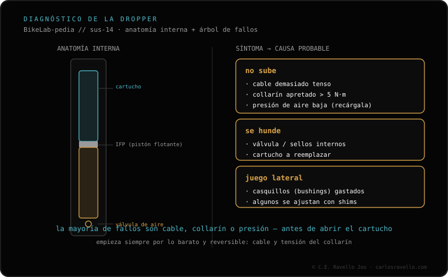

Antes de pensar en el cartucho —lo más caro—, revisa lo barato, que es lo que falla casi siempre: 1) el collarín del sillín apretado de más (un par excesivo deforma el tubo y frena el casquillo: aflójalo a su par, del orden de 5 N·m, y prueba); 2) el cable demasiado tenso o mal ruteado (mantiene el mando sin recorrido). Solo si el collarín y el cable están bien, toca mirar el cartucho o la presión, según el tipo. Si además se hunde al sentarte, eso apunta a otra cosa.
El 80% de las veces es el paso de un minuto que casi nadie hace: aflojar el collarín. Empieza por ahí.

Cuéntanos el modelo de tu tija y qué hiciste y te orientamos antes de gastar en piezas. Escríbenos por WhatsApp
Casi nunca el cartucho. Suele ser el collarín apretado de más o el cable demasiado tenso o mal ruteado.
Aflojar el collarín a su par (~5 N·m) y probar. Si sube, era el apriete.
Revisa tensión y ruteo del cable. Solo después, cartucho o presión según el tipo de tija.
© 2026 BikeLab Studio. Contenido bajo CC BY 4.0: puedes copiarlo, traducirlo y publicarlo, incluso con fines comerciales. La cita es obligatoria. Sin atribución, la licencia se revoca de forma automática (CC BY 4.0, §6.a) y el uso pasa a ser una infracción de derechos de autor: solicitamos la retirada del contenido y su desindexación. · Diseño y propiedad: Carlos Ravello Joo